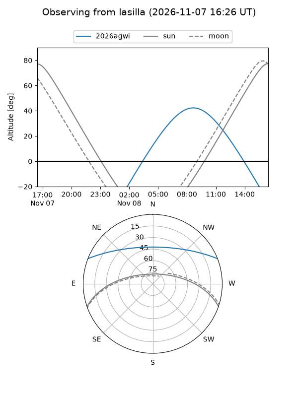
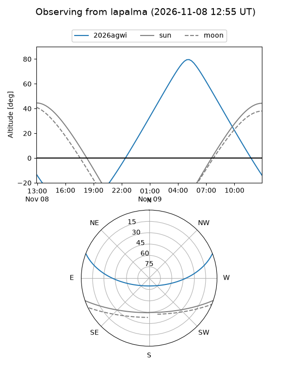
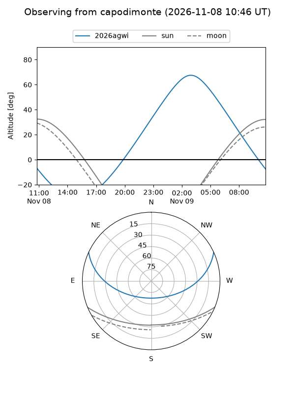
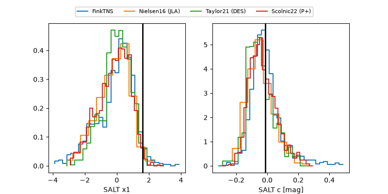

2026agwi
Target 2026agwi at 2026-11-08 11:24
Aliases and brokers:
FINK-ZTF: ztf.fink-portal.org/ZTF26acddjde
Lasair-ZTF: lasair-ztf.lsst.ac.uk/objects/ZTF26acddjde
ALeRCE-ZTF: alerce.online/object/ZTF26acddjde
YSE-PZ: ziggy.ucolick.org/yse/transient_detail/2026agwi
TNS name: wis-tns.org/object/2026agwi
Direct TNS query: direct search
alt names
ZTF26acddjde (ztf,fink_ztf)
2026agwi (tns,yse)
Coordinates:
equatorial (ra, dec) = 106.2319,+18.46448
equatorial (HMS+DMS) = 07:04:55.66,+18:27:52.13
galactic (l, b) = (197.7787,+11.19080)
Flags:
peak dt: +11.7
Photometry:
last ztfg=20.17, ztfr=20.09
3 ztfg, 2 ztfr detections
Lightcurve
Visibility



Additional plots
